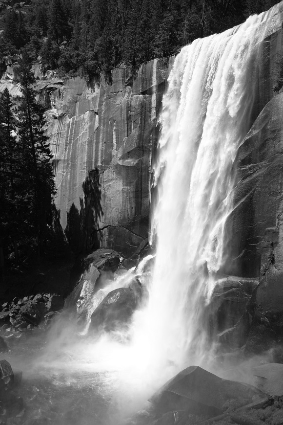
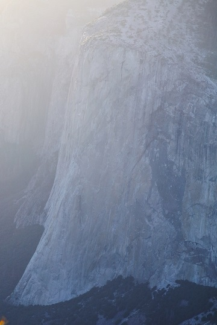

June 2018 Yosemite Camping Trip
June 25-28, 2018
Day 1 : Toulume Meadows, Soda Springs, Glen Aulin trail, Olmstead Viewpoint
Day 2 : Vernal Falls hike

Day 3 : Lower Yosemite Falls hike, Tunnel Viewpoint
Day 4 : Taft Point hike, Glacier Viewpoint
